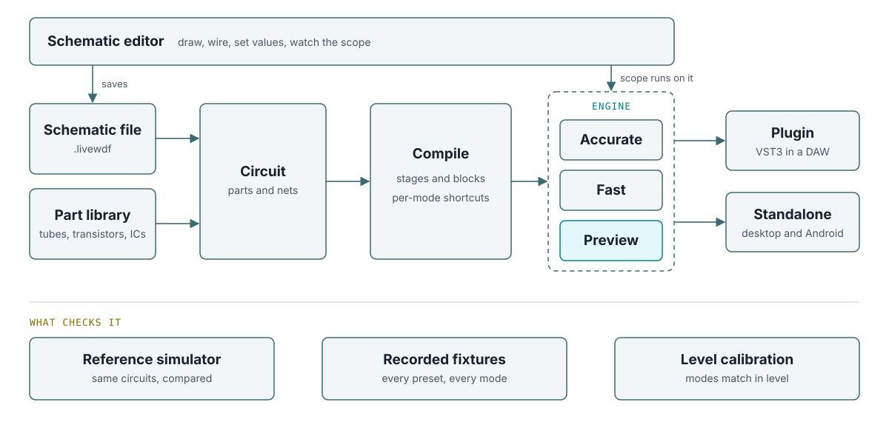

How it works
From schematic to sound
What the engine does with a circuit, part by part, for players and builders who want to know what they are hearing.

The big picture
LiveWDF plays a circuit, not a recording of one. You give it a schematic and it works out every voltage in that circuit, one sample at a time, while you play.
A schematic file lists the parts, their values and how they are wired. The part library adds what each part does: how a 12AX7 or a 2N3904 turns voltage into current.
Before playing, the circuit is compiled. The linear parts (resistors, capacitors, inductors) are folded into one network that is cheap to step. The parts that bend the signal, such as tubes, transistors and diodes, are split into stages: small groups of parts that pull on each other within a sample.
On every sample the engine solves each stage in order and updates the capacitors and inductors for the next one. At 48 kHz with 128-frame buffers it has 2.67 ms for each buffer, so every stage has to settle fast.
Before the first sample it finds the circuit's resting point, so tubes and transistors start at their bias and the first note does not hit a cold circuit.
Three modes
The same circuit can run in three ways. They trade exactness for speed.
- Accurate
- Solves every stage in full with tight tolerances and keeps the drawn power supply. It is the reference, it costs the most, and offline renders can be set to use it.
- Fast
- Same circuit, but solving plans are worked out ahead of time on a background thread, so each sample does less work. Some tubes get a cheaper law and the power supply gets simpler. It gives up the supply ripple and a little exactness.
- Preview
- The one you play through. On top of Fast, it uses shortcuts made for this circuit, each tested with tones and transients before it is used. Where a shortcut fails its test, that part falls back to the full solve. It also holds the supply rails in a cheaper way and replays tremolo lamps.
All three are calibrated to the same level, so switching modes does not make the sound jump.
Tubes
Triodes, the small tubes in a preamp, follow a law where plate current grows with the square of a mix of plate and grid voltage. That shape has an exact answer for a triode in its circuit, so many triode stages solve without iterating. When the grid is driven positive it conducts to the cathode, which gives the familiar blocking and squash.
Power pentodes are harder. A pentode has a screen grid, an extra electrode between the control grid and the plate that sets how much current the tube can pass. The full pentode law is expensive, and the power stage is where big amps spend their time.
So the EL34, 6L6GC and 6V6 use a cheaper law, the quadric pentode. It treats the total current as a sum of a few smooth squared terms in grid and screen voltage, fitted per tube, and splits that current between plate and screen the same way the full law does.
A plain fit still conducts a little with no screen voltage, which a real tube does not. A correction fades the current out over the last few volts of screen voltage, so it reaches zero smoothly. At normal screen voltages it changes almost nothing.
The EL84 has its own quadric fit, made to its datasheet, and uses it in every mode like the others.
Transistors and op-amps
Transistors and diodes use standard junction laws with model cards for the real part numbers. Some cards are fitted to the maker's datasheet curves, such as how gain changes with current.
Op-amps are modelled as an amplifier with finite gain, a bandwidth limit, a slew limit and output swing that stops at the rails. The feedback resistors stay in the circuit, so the gain comes from the drawn parts, as on the real board.
When a circuit loads, the engine finds its resting point: the bias voltages with no signal. It first tries a direct solve, then eases in, raising the supply voltages step by step.
A few circuits, such as an LFO that runs by itself, have no resting point a direct solve can reach. For those it powers the circuit up slowly over a simulated millisecond, letting the capacitors charge, until it settles. It is slower, and it only runs when the circuit loads.
Transformers
Output transformers and other transformers are modelled as coupled windings. Each has a turns ratio, a magnetising inductance (which sets the low end), a leakage inductance (which sets the top end) and winding resistance.
Centre-tapped transformers, as in push-pull power amps, are one coupled part with three primary terminals, so both halves see the same core.
Where a transformer has a datasheet, the factory amps take these values from it. The speaker is a resistive load on the secondary. The cabinet impulse response adds the speaker and room colour afterwards.
The core does not saturate in this model.
Power supply
A tube amp's supply sags: when you play hard the amp draws more current, the rail voltages drop and the amp compresses. LiveWDF keeps that, in a different form per mode.
In Accurate, amps with a drawn mains supply run it as drawn: the mains winding, the rectifier, the reservoir and filter capacitors. You get the real ripple, the hum and the sag.
In Fast and Preview the mains side is replaced by a cheaper supply: a fixed source behind a series resistance on each rectified output. Both are fitted per amp by running the drawn supply on its own, once at idle and once at the current that amp draws when driven full on, so the cheap supply sags by the right amount where it matters.
Everything after the reservoir stays. In Preview, each supply capacitor keeps its own voltage and is updated from the current drawn on the previous sample, so the rails still sag without the stages pulling on each other inside a sample.
What is dropped in Fast and Preview: the mains ripple and the hum it makes.
Delays and companders
Analog chorus and delay pedals use a bucket-brigade chip: a long row of tiny capacitors that pass a sample of the signal along, one step per clock tick. A faster clock means a shorter delay.
The bucket-brigade part does the same. Each clock period moves the charge two stages, the clock follows its control voltage, and the delayed output is a staircase that changes on each tick. That staircase is filtered before it reaches the host sample rate, so the clock does not fold back as noise. Clock bleed and chip noise are left out.
Many of these pedals squeeze the signal before the chip and expand it after, to hide the chip's noise. The NE570 compander part does that job: a rectifier measures the level on a capacitor, a gain cell scales the signal by it, and an internal op-amp sets the output. Noise, offset and temperature drift are left out.
Tremolo
Many amp tremolos use an oscillator that drives a lamp or LED, which shines on a light-dependent resistor in the signal path. The oscillator runs by itself; your playing does not change it.
In Preview, the engine records what that resistor does until two cycles in a row agree, then loops the last cycle. The signal path still runs live, but the oscillator no longer costs anything.
Fast and Accurate keep solving the oscillator every sample.
Matched power tubes
Push-pull amps often have two or four power tubes where pairs sit side by side, wired the same way.
When two identical tubes share their plate and cathode and get their grid and screen from the same steady supply through equal resistors, they see exactly the same voltages. The engine then solves one tube and counts its current twice.
The sound is the same and the work for that pair is smaller. It applies in every mode.
Levels
A circuit works in volts, your DAW works in samples. Each circuit stores an input reference, how many volts a full-scale sample stands for, so a guitar track hits a pedal at a guitar's level and a line track hits a studio unit at line level.
On the way out, each circuit has one fixed output divisor. It is fitted by playing guitar or studio passages at three levels and matching the result to the dry signal, so presets sit at a similar loudness. Being fixed, it keeps the circuit's own dynamics.
Fast and Preview can come out a little louder or quieter than Accurate, because their tube laws and supplies differ. Each circuit carries a trim per mode that corrects this, so all three modes match.
How it is checked
Some circuits are compared against a reference circuit simulator at several frequencies and control settings, and driven into clipping.
Every factory preset is rendered in all three modes and compared with saved recordings, so a change that moves the sound is caught.
Each mode's output level is measured against the dry signal, which is where the trims come from.